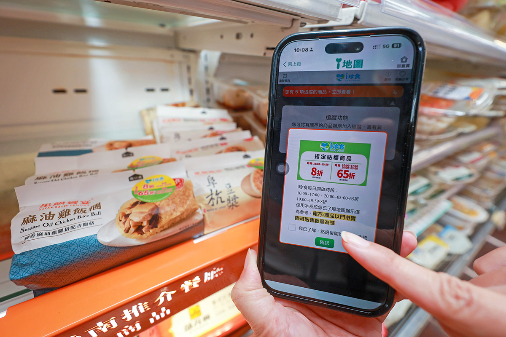
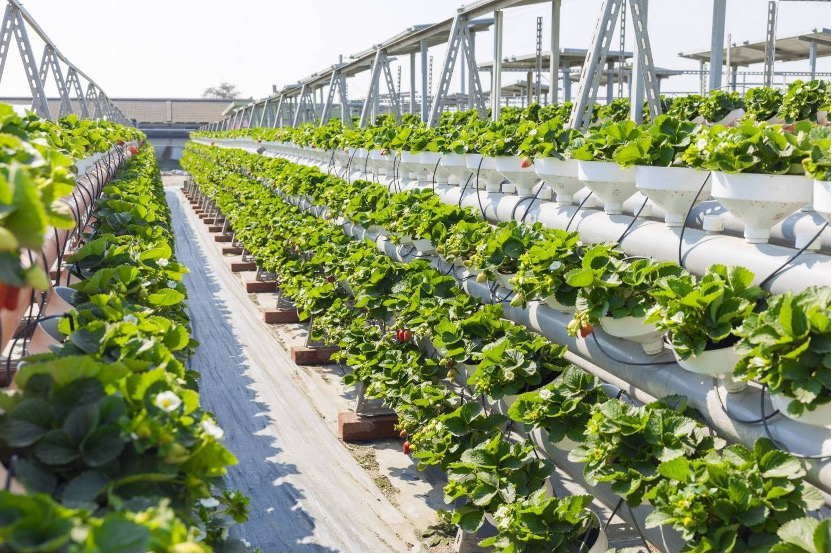
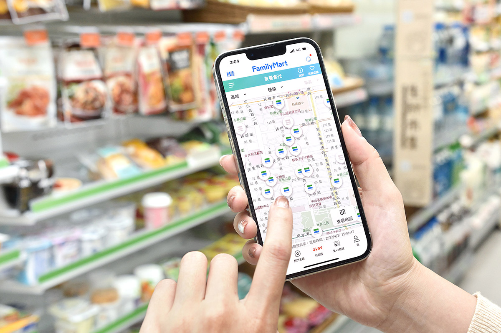
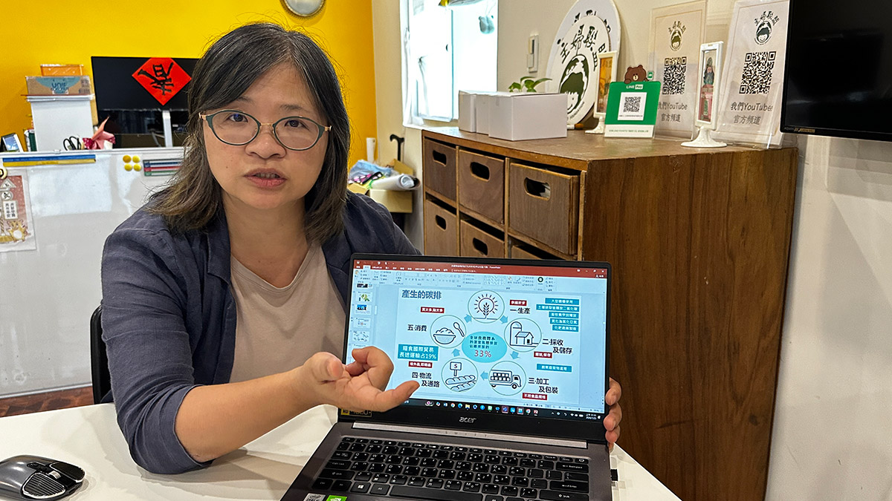
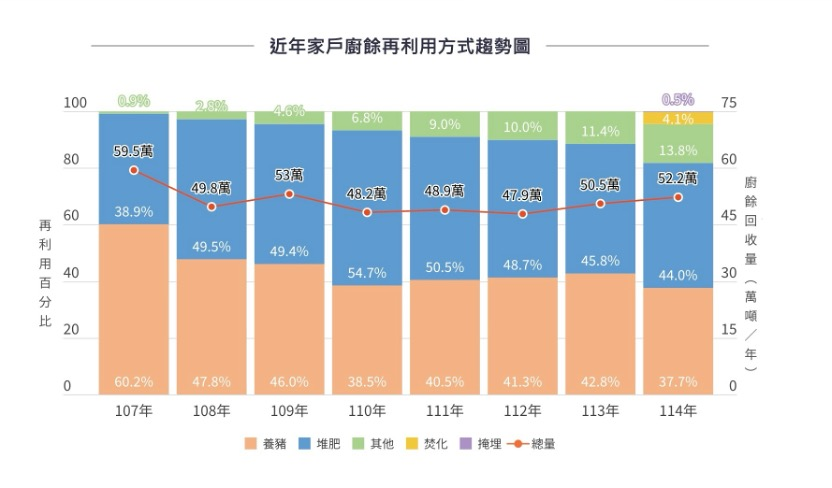
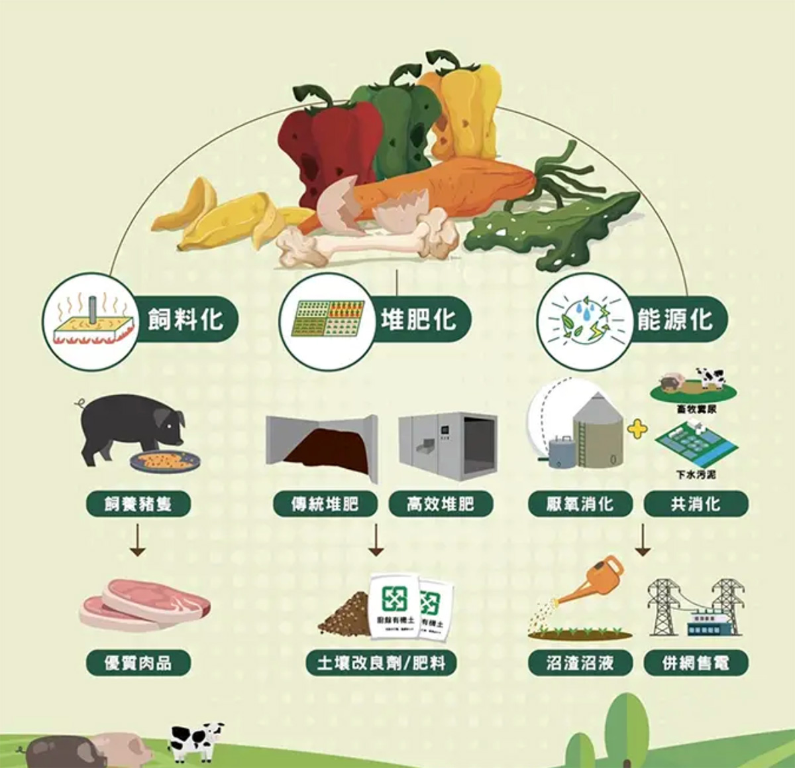

「今晚要搶ｉ珍食」背後，超商如何把剩食變永續商機
◎ 報導／陳詩璧
◎ 攝影／華子琛
◎ 圖片來源／統一超商・全家・翻攝環境部環管署網站
◎ 發布日期／2026.08.20

◎ 報導／陳詩璧
◎ 攝影／華子琛
◎ 圖片來源／統一超商・全家・翻攝環境部環管署網站
◎ 發布日期／2026.08.20
台股加權指數今年初從2萬9千點一路飆破4萬7千點，近期出現上下震盪，每當跌幅比較深時，網路討論就出現「今晚要搶ｉ珍食過活」的迷因哏。雖然從銷售數據，沒有發現有一定的關連性，但確實不少人是抱著不想浪費、撿便宜的心態購買。
統一超商自2020年6月推出「ｉ珍食」與門市惜食專區以來，透過系統化管控、銷售預測及即期品折扣等，門市食材使用率平均提升一成，光是2025年一年就大幅減少高達2萬公噸的剩食。無獨有偶，全家便利商店推行的「友善食光」每月平均亦減少約603公噸食物浪費，相當於降低201公噸二氧化碳排放，展現超商雙雄兼顧鮮食推廣與資源利用的決心。
對消費者而言，「ｉ珍食」等折扣鮮食能以更具CP值的價格讓消費者享有美食，但過去常面臨如同「開盲盒」般、無法確定想吃的品項是否還有庫存的困境。為解決此痛點，統一超商將「ｉ地圖」與門市POS機系統連線，每5分鐘即時更新一次庫存，讓民眾能在手機上精準掌握附近各門市的剩餘鮮食分量與種類，大幅提升消費便利性與購買意願。

▲ 不少民眾會鎖定「ｉ地圖」，尋找附近的門市據點，了解各家「ｉ珍食」銷售狀況再前往購買。（圖／華子琛攝）
除了類似「ｉ珍食」這種後端銷售的方式之外，從源頭精準控制數量才是減廢關鍵。統一超商自2019年起導入「AI訂貨系統」，協助門市更精準地掌握下單量；門市實現計畫性下單後，後端供應鏈工廠也能更精確地備料，從前端至後端聯手降低報廢率。
此外，針對仍在賞味期限內但規格不符的食材（格外品，指的是賣相不佳、或時間不對、供需失衡的農產品），統一超商也建立內部消化機制，例如供應商在生產後的格外品會改製成員工餐，或以優惠價格販售給內部員工，讓食材價值極大化，其中2025年代工廠剩食產生量，相較前一年減少433公噸。

▲ 魚菜共生系統搭配有機資材防治與全程不用藥、不刻意催熟的生產管理，形成「菜養魚、魚養水、水養草莓」的循環農業生態鏈。（圖片來源／統一超商提供）
在廢棄物再生領域，統一超商將資源循環概念延伸至農業。2023年起，中部100間7-ELEVEN門市的咖啡渣經處理轉化為有機肥料，提供給契作農場種植高麗菜、香蕉與玉米等為主。
近年更進一步將源頭廢棄物價值極致化，過去常被當成廚餘處理的蘿蔔葉、美生菜受損外葉等，導入「魚菜共生」循環系統，將剩餘菜葉轉化為養殖魚類的飼料，魚類排泄物再提煉成有機肥料送回契作農場。2025年更嘗試於契作魚塭四周種植草莓，引取魚塭水灌溉，採收後的草莓再回歸門市販售，打造「菜養魚、魚養水、水養草莓」的循環農業生態鏈。

▲ 全家APP設置「友善地圖」功能，消費者可掌握鄰近各店友善食光商品的存貨量。（圖／全家提供）
全家便利商店初期在推動「友善食光」時面臨到的挑戰，包括不同鮮食品項具有不同效期、跨系統資料必須即時且準確，以及店舖端須在不增加繁複作業的情況下正確執行。為此，全家便利商店導入「時控條碼」及「時間定價」技術，串聯鮮食製造、生產履歷、物流配送及店舖POS系統，讓商品依保存期限於指定時間自動完成價格調整，確保全台店點一致執行。
此外，「全家」亦導入AI鮮食建議訂購系統，整合歷史銷售、庫存、天候、人流及節慶等多項數據，協助店舖提升訂貨精準度，從源頭降低鮮食浪費，將科技應用延伸至惜食管理與營運優化。「友善地圖」透過APP提供即時查詢功能，讓消費者可快速掌握鄰近店舖友善食光商品的品項及數量。整體而言，友善食光每月平均可減少約603公噸食物浪費，並減少約201公噸二氧化碳排放，兼顧鮮食資源利用、消費者實惠與環境效益。

▲ 主婦聯盟基金會執行長吳碧霜樂見企業解決剩食問題，建議政府能比照國外，制定相關法規，讓企業可以更勇於揭露食材相關資訊。（圖／陳詩璧攝）
針對剩食處理議題，主婦聯盟環境保護基金會執行長吳碧霜表示，相當樂見企業積極投入解決剩食問題，並建議環境部應進一步制定相關法規。她舉例說明，可參考西班牙《食品損失與食物浪費防治法》，建立企業防止食物浪費制度，並鼓勵業者透過即期食品資訊揭露、折價販售及損贈等措施，提高食品利用效率。部分歐洲零售商也會在商品進入保存期限最後三分之一時開始折價、標示或促銷，以提高售出率，也是值得學習的方法。
針對國內超商推出的即期鮮食優惠，主婦聯盟環境保護基金會執行長吳碧霜建議，台灣可借鏡日本制度，明確區分「最佳賞味期」與「保存期限」，提升消費者對期限標示的正確認知，降低因誤解期限而造成的食物浪費。同時，可鼓勵業者建立更完善的即期食品折價與資訊揭露機制，讓仍在安全食用期限內的食品，透過合理的價格調整，提高消費者購買意願，兼顧食品安全、消費者權益與惜食目標。
對於民間與企業的響應，環境部綜合規劃司副司長温修慧表示，官方樂見企業主動推動減少食物浪費的活動，特別是超商開發即期鮮食媒合APP，都是落實「淨零綠生活」相當重要的實踐方式，能有效降低剩食產生。
環境部環保司司長徐淑芷也補充，相當看好超商惜食機制以及民間「惜食盲盒」的興起。她強調，這不僅對環境友善，更是社會上「善的循環」，政府絕對表達支持與鼓勵。徐淑芷指出，雖然現階段尚未針對企業或民間業者給予實質的資金補助或獎勵，但環境部未來會在相關宣傳管道上全力協助推廣。

▲ 環境部環管署一般廢棄物管理組組長蔡蓬培提到，環境部預計2027年底能達到完全「廚餘能資源化」的目標。（圖／翻攝環境部環管署網站）
環境部環境管理署一般廢棄物管理組組長蔡蓬培表示，目前廚餘主要採用三種方式處理：
1. 堆肥
2. 養殖黑水虻：產出的蟲體可當飼料，蟲糞則可做肥料
3. 厭氧消化：將廚餘分解發酵後產生甲烷，用於發電
雖然這三種方式目前尚無法完全消化全台廚餘，但環境部已設定目標，希望今年底處理量能可達到每日1,720噸，明年底進一步提升至2,119噸。參照過往累積資料，國內單日最高廚餘量為2,115噸，因此預計2027年底即可全面達到「廚餘能資源化」處理的目標。
除了後端處理，廚餘管理的另一項核心工作是推動民眾「惜食減量」，這也是目前各部會積極宣導的方向。蔡蓬培呼籲民眾，丟棄廚餘前應儘量將水分瀝乾，此舉能幫助黑水虻加快進食速度。談到現階段需要克服的挑戰，蔡蓬培指出，由於黑水虻養殖過程仍會有些許異味，若廠區鄰近人口密集的都市區，容易接獲民眾陳情，因此現階段相關設施多選擇建置於人口較稀少的區域。

▲ 剩食去化是今年環境部推廣循環資源的重點之一，廚餘妥善分類處理，除了做堆肥，還能透過厭氧消化、共消化轉化為沼氣發電。（圖／翻攝環境部環管署網站）
環境部司長徐淑芷也表示，各界都在思考如何從源頭減少廚餘。她建議自行下廚的民眾應「吃多少、煮多少」，外食族則應「依食量點餐」。根據環境部調查，家庭產生剩食的主要原因有兩個：一是「買太多」，二是「放過期卻沒察覺」。因此，良好的「採買規劃」與「冰箱管理」至關重要。徐淑芷建議，每次採買前應先確認家中缺乏哪些食材、適量購買即可；冰箱儲存則落實「先買先用」原則。只要從小細節做出微小改變，就能帶來極大的減少浪費效益。
主婦聯盟環境保護基金會執行長吳碧霜指出，降低生活成本不僅是切身需求，更是對環境友善的具體展現。在飲食方面，民眾可透過「適量採購食材」以及落實冰箱「先進先出」的管理原則，有效減少家戶廚餘與食物浪費。
此外，吳碧霜也鼓勵民眾出門時攜帶「綠背包」，隨身備齊能替代一次性用品的裝備，例如用餐需要的保鮮盒與環保餐具、外帶咖啡的隨行杯，以及隨身購物袋等，只要從自身的日常習慣做起，人人都能為環境保護盡一份心力。


新聞部
副總經理 王結玲
陳致中・陳詩璧・胡瑞麒・華子琛・談雍雍・吳家瑜
節目部
T觀點／莊開文・吳家瑋・莊秀惠・趙昱涵
數位事業部
總監 郭瀧億
內容策展組／廖玉貞・彭嘉儀・林佳瑤・李佳綺
ESG永續發展部
賴盈文・蔣成偉・張玲玲・黎育如・徐新瑜

© TVBS Media Inc. All Rights Reserved｜聯利媒體股份有限公司